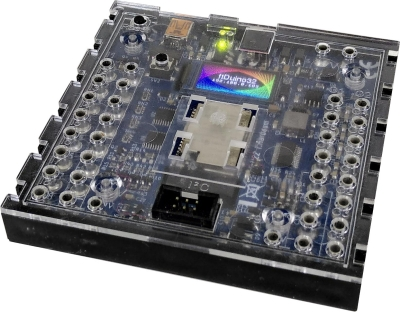

- ESP32, 240 Mhz dual core
- Built-in WiFi and Bluetooth
- 8 MB RAM
- 16 MB flash memory
- Color TFT display
The ftDuino32 is the big brother of the ftDuino. It comes in the same form factor and is mechanically and electically compatible with the ftDuino.
The ftDuino32 is currently under development. Its expected to become available in 2023 in the same shops that also sell the ftDuino.
